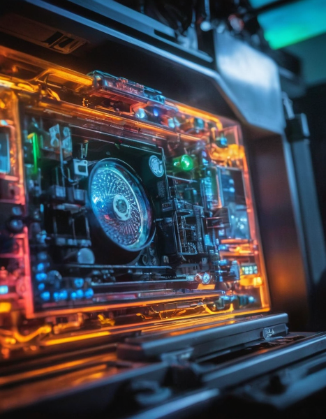

MMCam — Motor Motion Camera acquisition and analysis software
MMCam is an application for scientists and engineers that integrates with Ximea and Moravian Instruments cameras and motorized stages. Use MMCam for live preview, alignment, and measurement workflows.
